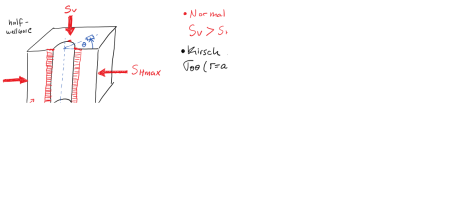
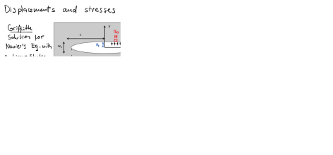
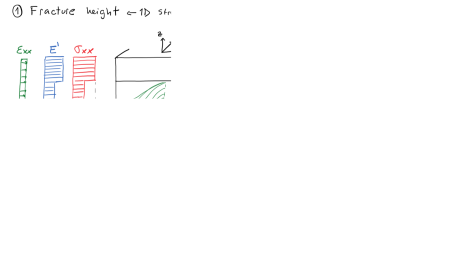
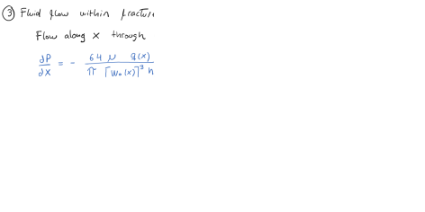
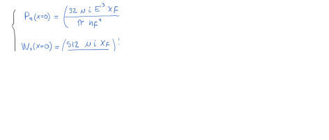
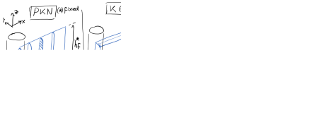
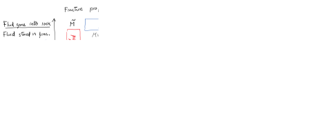
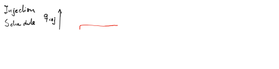
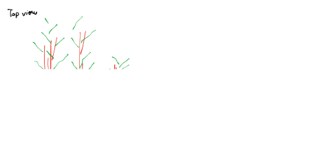
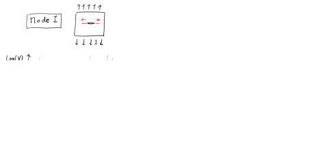

Subsections
This document is a draft.
Find hand written notes here: https://github.com/dnicolasespinoza/GeomechanicsJupyter/tree/master/ClassNotes.
Figure 5.1:
Pressure for tensile fracture initiation in an uncased vertical wellbore.
 |
Figure 5.2:
Breakdown solution cases based on level of horizontal stress anisotropy.
|
Figure 5.3:
Typical signature of a fracture injection/shut-in test as a function of time.
|
Figure 5.4:
Ideal orientation of hydraulic fractures: planes perpendicular to local least principal stress.
|
Figure 5.5:
Schematic of processes happening in a fluid-driven fracture.
|
Figure 5.6:
Physical processes and key equations for fluid-driven fractures.
|
Figure 5.7:
Net pressure concept for free-body diagrams and abstraction
|
Figure 5.8:
Solution for stress and displacements around a planar crack pressurized at constant pressure.
 |
Figure 5.9:
Derivation of stress intensity factor for plane-strain fracture with constant pressure
|
Figure 5.10:
Critical stress intensity factor for fracture propagation.
|
Figure 5.11:
PKN model: main assumptions and geometry.
|
Figure 5.12:
Determination of fracture height (from stress logs) and fracture width.
 |
Figure 5.13:
Fluid fllow along the fracture and mass conservation equations.
 |
Figure 5.14:
PKN derivation (1).
|
Figure 5.15:
PKN derivation (2).
 |
Figure 5.16:
PKN derivation (3).
|
Figure 5.17:
Summary pseudo 3D models: PKN, KGD and Radial.
 |
Figure 5.18:
Schematic and relevant parameters for fracture propagation in porous media.
|
Figure 5.19:
Dimensionless space for fracture propagation in porous media.
 |
Figure 5.20:
Summary of key points.
|
Figure 5.21:
Comparison between single fracture vertical well and horizontal well with multiple clusters per stage .
|
Figure 5.22:
Fracture interference in a stage with multiple clusters.
|
Figure 5.23:
Typical fracture design in the Permian Basin.
|
Figure 5.24:
Typical injection schedule.
 |
TBA (high permeability layers)
Figure 5.25:
Pure and mixed-mode fracture propagation.
|
Figure 5.26:
Conceptual image of fracture swarms.
 |
Figure 5.27:
Concept of subcritical fracture propagation.
|
Figure 5.28:
Subcritical fracture propagation in hydraulic fracturing.
 |
Figure 5.29:
Conceptual image of fracture swarms and microseismic events.
|
Figure 5.30:
The Stimulated Reservoir Volume and relationship with seismic and aseismic slip.
|
Figure 5.31:
Velocity strenghtening and weakening shear slip.
|
Read the paper “Roussel, N. P., and Sharma, M. M. (2011). Optimizing fracture spacing and sequencing in horizontal-well fracturing. SPE Production and Operations, 26(02), 173-184.” https://doi.org/10.2118/127986-PA.
- Calculate the point of principal stress reversal (isotropic point in Fig. 11 of the paper) with a constant pressure and plane-strain solution utilizing your FreeFEM++ linear elasticity code. Use all parameters as in Table 1. Note:
.
- Repeat the previous task for fracture width 6 mm, 8 mm, and 10 mm. Plot stress reversal distance as a function of fracture width. Hint: You may need to calculate the required net pressure from the analytical solution.
Figure 5.32:
 direction around a propped hydraulic fracture (Roussel and Sharma, 2011).
direction around a propped hydraulic fracture (Roussel and Sharma, 2011).
|
A single hydraulic fracture treatment will be performed in a tight sandstone.
The hydraulic fracture height is expected to be  = 170 ft.
The tight sandstone has a plane-strain modulus
psi.
The (two-wing) injection rate will be 50 bbl/min (constant) during 1 hour.
= 170 ft.
The tight sandstone has a plane-strain modulus
psi.
The (two-wing) injection rate will be 50 bbl/min (constant) during 1 hour.
Compute:
- The expected fracture half-length , fracture width at the wellbore
 , and net pressure
, and net pressure  as a function of time with the PKN model (no leak-off) assuming the fracturing fluid has a (constant) viscosity 2 cP.
as a function of time with the PKN model (no leak-off) assuming the fracturing fluid has a (constant) viscosity 2 cP.
- The expected fracture half-length , fracture width at the wellbore , and net pressure as a function of time with the PKN model (no leak-off). Now the fracturing fluid has a viscosity 2 cP with no proppant (initial 10 min), and increases in steps of 10 min with 2 cP in each step (due to increasing proppant concentration).
- What should you do to your solution in order to consider leak-off? Justify and explain briefly the algorithm to calculate , , and .
Hint: convert all quantities to the SI system first
![\includegraphics[scale=0.35]{.././Figures/CH5-22.PNG}](img295.svg)